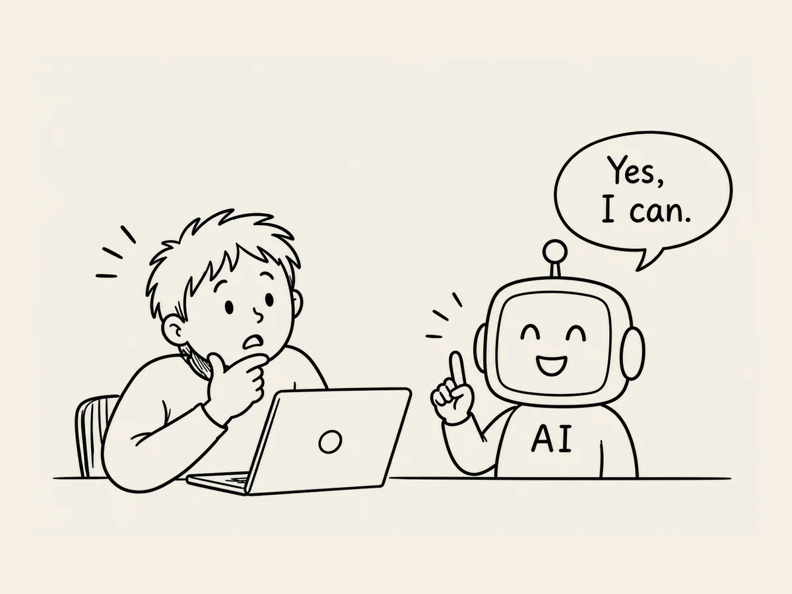

10.
이거 네가 할 수 있어?
어느 정도 AI와 붙어서 작업하면서 깨달은 게 있다.
AI는 자기가 뭘 할 수 있는지 물어보지 않으면 잘 말하지 않는다는 거다.
바로 닥친 일만 해결하다 보면 AI가 할 줄 아는 걸 지나칠 때가 있다.
첫 화면을 만들어 가고 있었다.
바탕색이 어떤 게 좋을까 고민하고, 가로 세로 비율도 검토했다.
폰트도 이것저것 바꿔봤다.
그러다 문득, 이걸 얘가 할 수 있을 것 같았다.
그냥 화면을 캡처했다.
그리고 AI에게 보여줬다.
“내가 지금까지 만들고 있던 거야.
네가 이걸 제대로 한 번 만들어봐.”
세상에.
꽤 그럴싸한 걸 만들어냈다.
“네가 그린 것 중에 바탕색과 글자색이 좀 안 어울리는 것 같아.”
“다른 의견은 없어?”
괜찮은 색상코드까지 딱 제시한다.
물론 AI가 모든 걸 잘하는 건 아니다.
그런데 내가 끙끙대고 있는 일 중에는
이미 AI가 할 수 있는 일이 많았다.
문제는 AI가 그걸 할 줄 안다는 사실을 내가 자꾸 까먹는다는 거다.
그래서 일을 하다가 가끔 멈춘다.
그리고 물어본다.
“잠깐만. 이거 네가 할 수 있어?”
